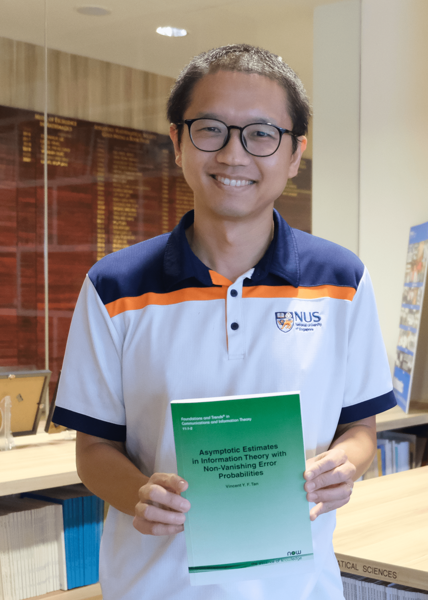

Vincent Y. F. Tan 陈延福 (he/him • 他)
|
 |
Professor Office: S17-05-20 (Mathematics) and E4-06-06 (ECE)
Curriculum Vitae.
|
Featured
- Recruiting Postdoctoral Researchers. Applications are invited to join my NRF Investigatorship on information-theoretic foundations of large language models. Please see the advertisement for more details.
- Teaching This Semester. Information-Theoretic Methods in Statistical Learning (MA6225). Thursdays, 10:00–13:00, S17-05-11. Open to all NUS students.
Research at a Glance
An overview of my current research programme. Learn more about my research.
News (Archive)
-
Oct 2026: Three new papers posted on the arXiv:
- Sampling Allocation of LinUCB: Optimal Design Limits in the Small-Gap Regime (with Yujie Liu and Yunbei Xu), accepted to ACM SIGMETRICS 2027.
- Asymptotically Optimal Best Arm Identification with Fixed-Budget under Differential Privacy (with Keqin Chen, Jie Bian, and Yulian Wu), accepted to NeurIPS 2026.
- On the Tightness of Omura's Strong Converse Exponent and Critical Rates Above Capacity (with Hamdi Joudeh).
-
Sep 2026: Three papers accepted to NeurIPS 2026, on vision-language models, differentially private bandits, and best-arm identification with regret:
- SP2ec: Adaptive Self-Speculative Decoding for Vision-Language Models (with Yuqi Huang, Xingyao Li, Yunlong Hou, Fengzhuo Zhang, and Jiachun Pan).
- Asymptotically Optimal Best Arm Identification with Fixed-Budget under Differential Privacy (with Keqin Chen, Jie Bian, and Yulian Wu).
- On Minimizing Regret in Fixed-Confidence ε-Best Arm Identification (with Tianyuan Jin and Junwen Yang).
- Sep 2026: Posted a preprint "Second-Order Asymptotics for the Gaussian MAC on the Relative Interior of the Sum-Rate Face" on the arxiv. Comments are very welcome!
- Sep 2026: Paper "Sampling Allocation of LinUCB: Optimal Design Limits in the Small-Gap Regime" accepted to SIGMETRICS 2027. Joint work with Yujie Liu and Yunbei Xu.
- Sep 2026: Paper "Almost Asymptotically Optimal Active Clustering Through Pairwise Observations" accepted by the IEEE Transactions on Information Theory. Joint work with Rachel Teo, P. N. Karthik and Ramya Vinayak.
- Aug 2026: Welcome Qingwen Zhang as a new Research Fellow to the group.
- Aug 2026: Posted a preprint "Second-Order Asymptotics for the Gaussian Multiple-Access Channel at Corner Points" on the arxiv. Comments are very welcome!
- Aug 2026: Paper "ViDE: Tuning-Free Video Coherence via Temporal Attention Reweighting and Prompt Blending" accepted to the Transactions on Machine Learning Research. Joint work with Xingyao Li, Hao Zhang, Fengzhuo Zhang, Jiachun Pan, Yunlong Hou, and Zhuoran Yang.
- Jul 2026: Heartiest congratulations to research fellow Yihang Gao for being offered a tenure track Assistant Professor position at Hong Kong Baptist University (HKBU) Math department.
- Jul 2026: Posted a preprint on the arxiv "Statistical Inference for Rank Allocation in Low-Rank Adaptation". Joint work with Yihang Gao.
- Jul 2026: Ping Li and Canzhe Zhao join the group as Research Fellows. Welcome!
- Jul 2026: Paper "Finite-Time Minimax Bounds and an Optimal Lyapunov Policy in Queueing Control" accepted to Operations Research. Joint work with Yujie Liu and Yunbei Xu.
- Jul 2026: Three papers to be presented at the 19th European Workshop on Reinforcement Learning (EWRL 2026). (i) "Best Arm Identification with Minimal Regret" (with Junwen Yang and Tianyuan Jin); (ii) "Reinforcement Learning with Abstention: Interaction-Aware Regret Bounds" (with Yuan Cheng); (iii) "On the Benefits of Free Exploration for Regret Minimization in Multi-Armed Bandits" (with Yunlong Hou and Zixin Zhong).
- Jul 2026: Posted a preprint on the arxiv "Balancing Expressivity and Learnability in Quantum Kernel Bandit Optimization". Joint work with Ph.D. student Yuqi Huang and collaborator Sharu Theresa Jose. To be presented at UAI 2026.
- Jun 2026: Posted a preprint on the arxiv "Bayesian Best-Arm Identification with Abstention: A Polynomial-to-Exponential Phase Transition". Joint work with Ph.D. student Yuqi Huang and research fellow Yunlong Hou.
- Jun 2026: Reappointed to the University Promotion and Tenure Committee (UPTC) and the University Teaching Excellence Committee (UTEC). Taking up the role of Deputy Head (Graduate Programmes) in the Department of Mathematics in the new academic year.
- Jun 2026: Yulian Wu joins the group as a Research Fellow. Welcome!
- Jun 2026: Hosted a visit by Dr. Yuko Kuroki.
- Jun 2026: Rated 4.8/5.0 and 4.9/5.0 respectively for my teaching of EE5138 Optimization for ECE and EE6138 Optimization for ECE (Advanced) last semester. See some review quotes here and here. I really enjoyed teaching this course!
- Jun 2026: Two papers accepted to UAI 2026: (i) Balancing Expressivity and Learnability in Quantum Kernel Bandit Optimization (joint work with Ph.D. student Yuqi Huang and collaborator Sharu Theresa Jose) and (ii) Dynamic Regret in Outlier-Oblivious Online Optimization using Nonconvex Robust Losses (joint work with former research fellows Adarsh Barik and Anand Krishna).
Selected Publications
Explore selected journal papers, conference papers, and monographs by research theme, or view a shorter list of highlights.
Select a dot to see the paper and its links. Clusters are curated by topic; distances are illustrative, not a quantitative similarity measure. On smaller screens, swipe horizontally to explore.
A compact list of ten homepage highlights.
Recent
NeurIPS 2026
Operations Research 2026+ · Outstanding Poster Prize
Earlier Highlights
Foundations and Trends® in Communications and Information Theory, 2022
Foundations and Trends® in Communications and Information Theory, 2014
IEEE Transactions on Information Forensics and Security, 2019
IEEE Transactions on Pattern Analysis and Machine Intelligence, 2013
IEEE Transactions on Information Theory, 2011
Complete lists: Journal Papers · CS Conference Papers · Monographs